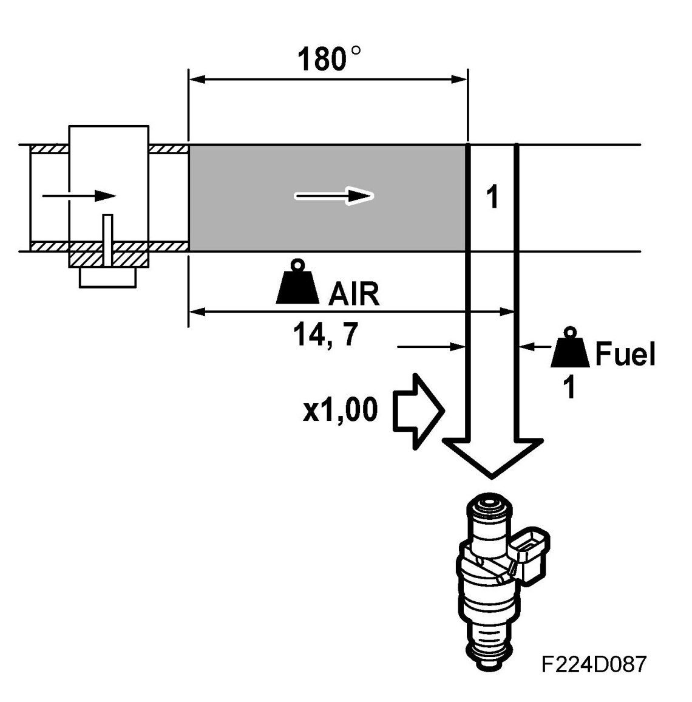
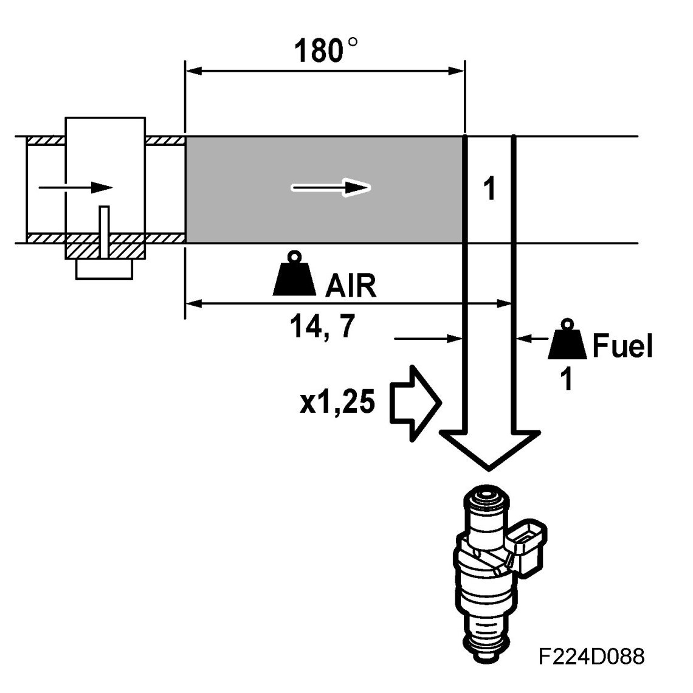
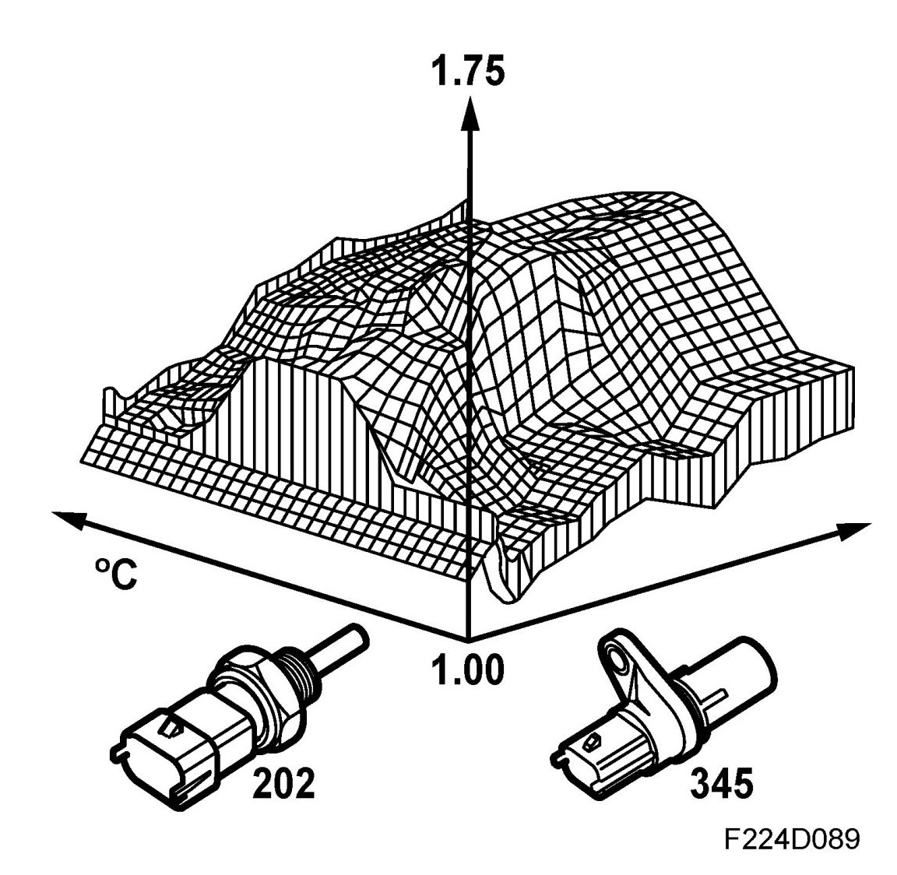
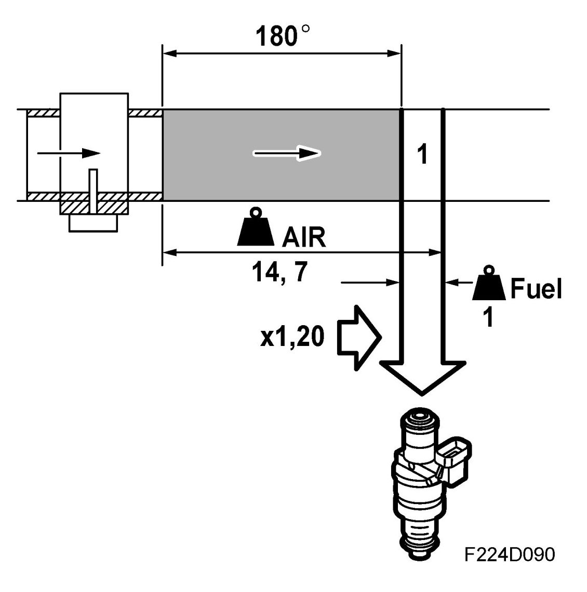
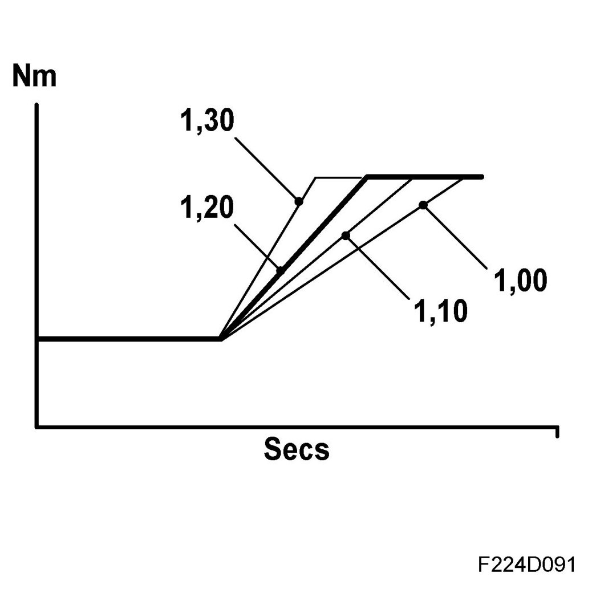
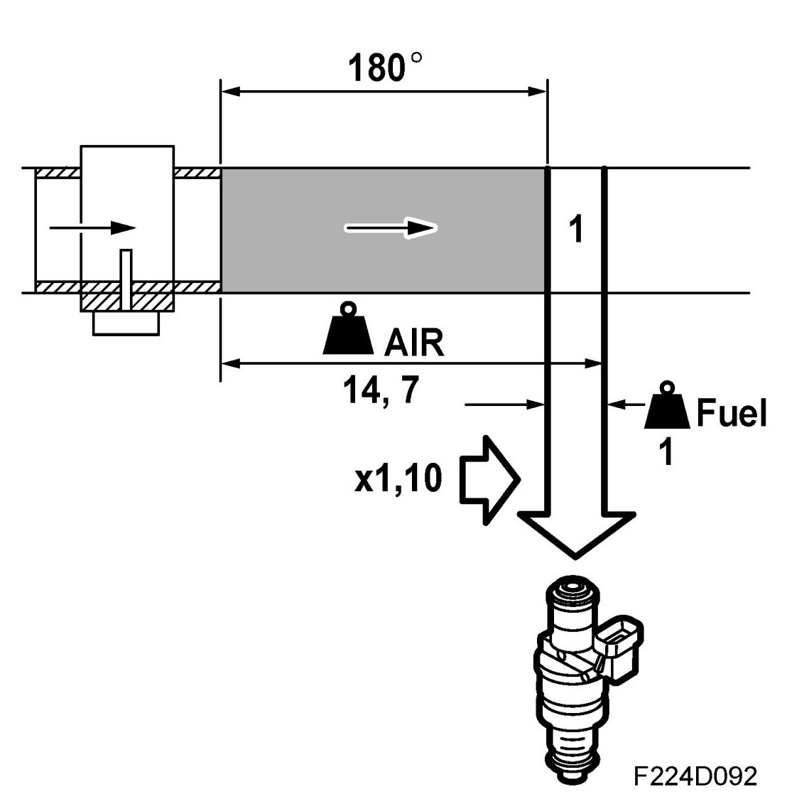
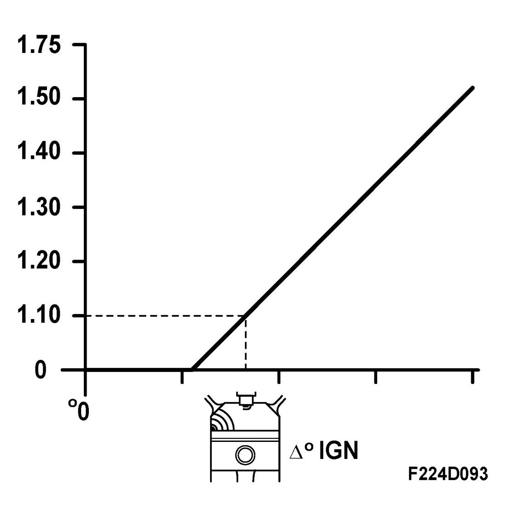
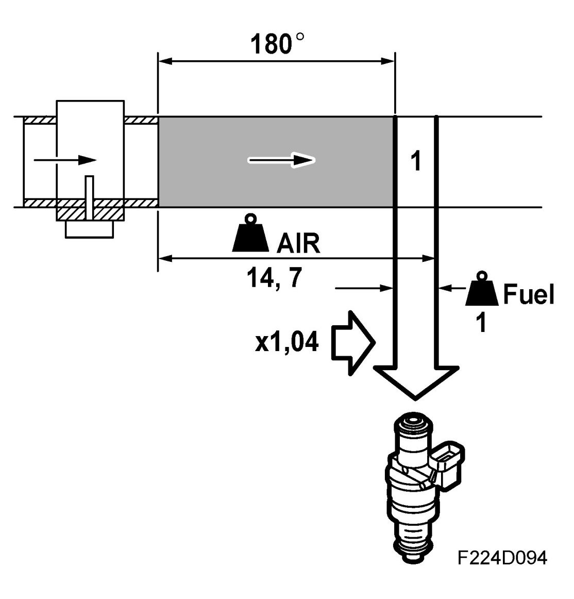
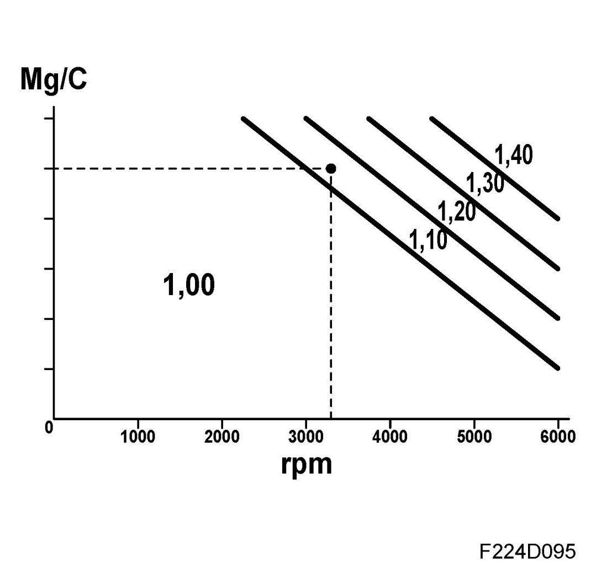

Compensation
Compensation

The calculated basic quantity of fuel will enable the engine to run perfectly under normal conditions, i.e. as long as it is warm and the load or rpm does not change. However, the fuel/air mixture must sometimes be corrected for the engine to function well and emissions to remain low under all conditions.
The basic fuel quantity is multiplied by a correction factor which is normally 1.00. If the correction factor is changed, for example to 1.01, the fuel quantity will be increased by 1%. If instead the correction factor is changed to 0.98, the fuel quantity will be reduced by 2%. The closed loop control system is usually disabled if the correction has a value other than 1.00, otherwise the compensation would be corrected by the closed loop system and be ineffective.
After starting

Immediately after starting the engine, the correction factor is slightly over 1 and then falls gradually to 1.00. The extent to which the correction factor exceeds 1 and the time it takes to reach 1.00 again depend on the coolant temperature. On cars with carburettor engines, this function is the choke. The closed loop starting criteria are such that it starts just when fuel enrichment after starting has dropped to 1.00.

Load changes

A sudden load increase causes the mg air/combustion to increase rapidly and it is well known that petrol engines then require a richer mixture. This is because fuel is deposited on the walls of the intake manifold due to the increase in pressure there, and the wet-film thickness increases. The fuel quantity used here must be replaced by a slightly larger quantity of injected fuel, which is achieved by increasing the correction factor by a few percentage points. For example, the correction factor can be increased from 1.00 to 1.03, which gives 3% more fuel.
As soon as the load increase stops, the correction factor returns to its original value.
In the case of a load reduction, the function is reversed. The wet-film deposited on the walls of the inlet manifold thins quickly as the pressure drops. The quantity of injected fuel must then be reduced to avoid a negative effect on emissions and fuel consumption, so the correction factor is reduced by a few percentage points. For example, the correction factor can be reduced from 1.00 to 0.96, giving a 4% reduction in fuel quantity.
When the engine coolant temperature is below 40C, the closed loop will be disabled during load changes (if it was active). The reason for this is that the closed loop would otherwise compensate. When the engine coolant temperature exceeds 70C, the closed loop will be active during load changes, as the fuel correction is then so small that the compensation would not affect the running of the engine. The amount that the correction factor is moved from 1.00 in connection with load changes depends on how fast the air mass/combustion changes and on the engine coolant temperature.
On a car with a carburettor engine, the function described above corresponds to the accelerator pump or damper piston.

Knocking

If the engine is knocking, it is corrected by retarding the ignition for the cylinder in question. If knocking persists despite the retardation, the correction factor will be increased. Closed loop will then be deactivated (if it was active) as it would otherwise counter-compensate.

Full load enrichment

When the engine load and speed has reached a certain limit, the correction factor will gradually increase as the load or engine speed increases further. At the same time, the closed loop will be de-activated (if it was active) as it would otherwise counter-compensate. This is to ensure that all the air is consumed during combustion and to keep the combustion temperature under control. The result is increased engine torque and decreased thermal load.
